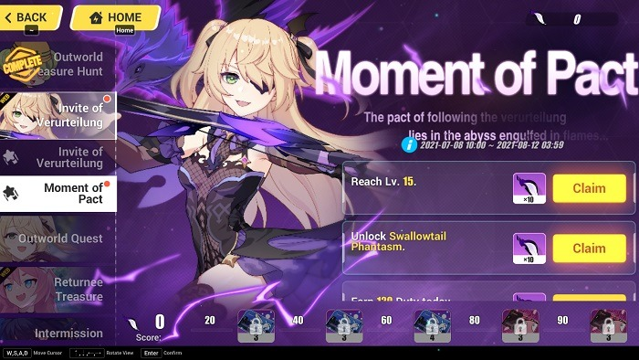

BLOG · UN ENCUENTRO ENTRE MUNDOS
La aventura que unió dos universos
Una mirada a la colaboración de 2021 y a sus protagonistas.

Por Alonso Suarez
Diseño y Desarrollo Web · Proyecto PA2¿Qué fue Outworld Traveler?
En julio de 2021, Honkai Impact 3rd recibió una colaboración con Genshin Impact. La versión 4.9, llamada Outworld Traveler, llevó personajes y elementos de Teyvat al juego de acción de miHoYo. El anuncio oficial de la actualización se publicó el 8 de julio de 2021.
Fischl, Keqing y una sorpresa para Theresa
Fischl llegó con su traje de combate Prinzessin der Verurteilung! y acompañada por Oz. Sus ataques con arco se adaptaron al combate de Honkai Impact 3rd. Keqing también participó como invitada en la historia y pudo controlarse en determinadas batallas del evento.
Theresa recibió el atuendo Heat of Trifolium, inspirado en Klee, para su traje Celestial Hymn. Su ropa roja y su gorro trasladaron la estética de la pequeña aventurera a esta colaboración.
Una aventura llamada Outworld Quest
Outworld Quest fue el evento temático de la versión. Combinó exploración de mapas con personajes chibi, conversaciones y desafíos. Completar sus misiones permitía obtener recompensas como el atuendo de Theresa y fragmentos de Fischl. Fue una manera de reunir la fantasía de Genshin Impact con la acción de Honkai Impact 3rd.
Fuentes: anuncio oficial de la versión 4.9, tráiler oficial y video de desarrollo.